18 Distribution of one variable
These charts draw how the values of one variable are spread: binned counts (histogram), a kernel density (density) and the empirical distribution function (ecdf). Use them to see the shape of a distribution; qq and pp compare two distributions by quantiles or by probabilities.
(ns reference.charts-one-variable
(:require [fastmath.random :as r]
[cljplot2.chart :as chart]
[cljplot2.core :as plot]
[cljplot2.describe :as describe]
[notebook-utils :as nu]))Data: Edgar Anderson’s iris measurements, R datasets package iris (Anderson 1935; Fisher 1936); licence: Part of R (GPL-2 | GPL-3).
(def iris (nu/dataset :iris))| sepal-length | sepal-width | petal-length | petal-width | species |
|---|---|---|---|---|
| 5.1 | 3.5 | 1.4 | 0.2 | setosa |
| 4.9 | 3 | 1.4 | 0.2 | setosa |
| 4.7 | 3.2 | 1.3 | 0.2 | setosa |
| 4.6 | 3.1 | 1.5 | 0.2 | setosa |
| 5 | 3.6 | 1.4 | 0.2 | setosa |
| 5.4 | 3.9 | 1.7 | 0.4 | setosa |
| 4.6 | 3.4 | 1.4 | 0.3 | setosa |
| 5 | 3.4 | 1.5 | 0.2 | setosa |
| 4.4 | 2.9 | 1.4 | 0.2 | setosa |
| 4.9 | 3.1 | 1.5 | 0.1 | setosa |
| 5.4 | 3.7 | 1.5 | 0.2 | setosa |
| 4.8 | 3.4 | 1.6 | 0.2 | setosa |
| 4.8 | 3 | 1.4 | 0.1 | setosa |
| 4.3 | 3 | 1.1 | 0.1 | setosa |
| 5.8 | 4 | 1.2 | 0.2 | setosa |
| 5.7 | 4.4 | 1.5 | 0.4 | setosa |
| 5.4 | 3.9 | 1.3 | 0.4 | setosa |
| 5.1 | 3.5 | 1.4 | 0.3 | setosa |
| 5.7 | 3.8 | 1.7 | 0.3 | setosa |
| 5.1 | 3.8 | 1.5 | 0.3 | setosa |
| 5.4 | 3.4 | 1.7 | 0.2 | setosa |
| 5.1 | 3.7 | 1.5 | 0.4 | setosa |
| 4.6 | 3.6 | 1 | 0.2 | setosa |
| 5.1 | 3.3 | 1.7 | 0.5 | setosa |
| 4.8 | 3.4 | 1.9 | 0.2 | setosa |
| 5 | 3 | 1.6 | 0.2 | setosa |
| 5 | 3.4 | 1.6 | 0.4 | setosa |
| 5.2 | 3.5 | 1.5 | 0.2 | setosa |
| 5.2 | 3.4 | 1.4 | 0.2 | setosa |
| 4.7 | 3.2 | 1.6 | 0.2 | setosa |
| 4.8 | 3.1 | 1.6 | 0.2 | setosa |
| 5.4 | 3.4 | 1.5 | 0.4 | setosa |
| 5.2 | 4.1 | 1.5 | 0.1 | setosa |
| 5.5 | 4.2 | 1.4 | 0.2 | setosa |
| 4.9 | 3.1 | 1.5 | 0.2 | setosa |
| 5 | 3.2 | 1.2 | 0.2 | setosa |
| 5.5 | 3.5 | 1.3 | 0.2 | setosa |
| 4.9 | 3.6 | 1.4 | 0.1 | setosa |
| 4.4 | 3 | 1.3 | 0.2 | setosa |
| 5.1 | 3.4 | 1.5 | 0.2 | setosa |
| 5 | 3.5 | 1.3 | 0.3 | setosa |
| 4.5 | 2.3 | 1.3 | 0.3 | setosa |
| 4.4 | 3.2 | 1.3 | 0.2 | setosa |
| 5 | 3.5 | 1.6 | 0.6 | setosa |
| 5.1 | 3.8 | 1.9 | 0.4 | setosa |
| 4.8 | 3 | 1.4 | 0.3 | setosa |
| 5.1 | 3.8 | 1.6 | 0.2 | setosa |
| 4.6 | 3.2 | 1.4 | 0.2 | setosa |
| 5.3 | 3.7 | 1.5 | 0.2 | setosa |
| 5 | 3.3 | 1.4 | 0.2 | setosa |
| 7 | 3.2 | 4.7 | 1.4 | versicolor |
| 6.4 | 3.2 | 4.5 | 1.5 | versicolor |
| 6.9 | 3.1 | 4.9 | 1.5 | versicolor |
| 5.5 | 2.3 | 4 | 1.3 | versicolor |
| 6.5 | 2.8 | 4.6 | 1.5 | versicolor |
| 5.7 | 2.8 | 4.5 | 1.3 | versicolor |
| 6.3 | 3.3 | 4.7 | 1.6 | versicolor |
| 4.9 | 2.4 | 3.3 | 1 | versicolor |
| 6.6 | 2.9 | 4.6 | 1.3 | versicolor |
| 5.2 | 2.7 | 3.9 | 1.4 | versicolor |
| 5 | 2 | 3.5 | 1 | versicolor |
| 5.9 | 3 | 4.2 | 1.5 | versicolor |
| 6 | 2.2 | 4 | 1 | versicolor |
| 6.1 | 2.9 | 4.7 | 1.4 | versicolor |
| 5.6 | 2.9 | 3.6 | 1.3 | versicolor |
| 6.7 | 3.1 | 4.4 | 1.4 | versicolor |
| 5.6 | 3 | 4.5 | 1.5 | versicolor |
| 5.8 | 2.7 | 4.1 | 1 | versicolor |
| 6.2 | 2.2 | 4.5 | 1.5 | versicolor |
| 5.6 | 2.5 | 3.9 | 1.1 | versicolor |
| 5.9 | 3.2 | 4.8 | 1.8 | versicolor |
| 6.1 | 2.8 | 4 | 1.3 | versicolor |
| 6.3 | 2.5 | 4.9 | 1.5 | versicolor |
| 6.1 | 2.8 | 4.7 | 1.2 | versicolor |
| 6.4 | 2.9 | 4.3 | 1.3 | versicolor |
| 6.6 | 3 | 4.4 | 1.4 | versicolor |
| 6.8 | 2.8 | 4.8 | 1.4 | versicolor |
| 6.7 | 3 | 5 | 1.7 | versicolor |
| 6 | 2.9 | 4.5 | 1.5 | versicolor |
| 5.7 | 2.6 | 3.5 | 1 | versicolor |
| 5.5 | 2.4 | 3.8 | 1.1 | versicolor |
| 5.5 | 2.4 | 3.7 | 1 | versicolor |
| 5.8 | 2.7 | 3.9 | 1.2 | versicolor |
| 6 | 2.7 | 5.1 | 1.6 | versicolor |
| 5.4 | 3 | 4.5 | 1.5 | versicolor |
| 6 | 3.4 | 4.5 | 1.6 | versicolor |
| 6.7 | 3.1 | 4.7 | 1.5 | versicolor |
| 6.3 | 2.3 | 4.4 | 1.3 | versicolor |
| 5.6 | 3 | 4.1 | 1.3 | versicolor |
| 5.5 | 2.5 | 4 | 1.3 | versicolor |
| 5.5 | 2.6 | 4.4 | 1.2 | versicolor |
| 6.1 | 3 | 4.6 | 1.4 | versicolor |
| 5.8 | 2.6 | 4 | 1.2 | versicolor |
| 5 | 2.3 | 3.3 | 1 | versicolor |
| 5.6 | 2.7 | 4.2 | 1.3 | versicolor |
| 5.7 | 3 | 4.2 | 1.2 | versicolor |
| 5.7 | 2.9 | 4.2 | 1.3 | versicolor |
| 6.2 | 2.9 | 4.3 | 1.3 | versicolor |
| 5.1 | 2.5 | 3 | 1.1 | versicolor |
| 5.7 | 2.8 | 4.1 | 1.3 | versicolor |
| … | … | … | … | … |
Data: Old Faithful geyser eruptions, R datasets package faithful (Härdle 1991; Azzalini & Bowman 1990); licence: Part of R (GPL-2 | GPL-3).
(def faithful (nu/dataset :faithful))| eruptions | waiting |
|---|---|
| 3.6 | 79 |
| 1.8 | 54 |
| 3.333 | 74 |
| 2.283 | 62 |
| 4.533 | 85 |
| 2.883 | 55 |
| 4.7 | 88 |
| 3.6 | 85 |
| 1.95 | 51 |
| 4.35 | 85 |
| 1.833 | 54 |
| 3.917 | 84 |
| 4.2 | 78 |
| 1.75 | 47 |
| 4.7 | 83 |
| 2.167 | 52 |
| 1.75 | 62 |
| 4.8 | 84 |
| 1.6 | 52 |
| 4.25 | 79 |
| 1.8 | 51 |
| 1.75 | 47 |
| 3.45 | 78 |
| 3.067 | 69 |
| 4.533 | 74 |
| 3.6 | 83 |
| 1.967 | 55 |
| 4.083 | 76 |
| 3.85 | 78 |
| 4.433 | 79 |
| 4.3 | 73 |
| 4.467 | 77 |
| 3.367 | 66 |
| 4.033 | 80 |
| 3.833 | 74 |
| 2.017 | 52 |
| 1.867 | 48 |
| 4.833 | 80 |
| 1.833 | 59 |
| 4.783 | 90 |
| 4.35 | 80 |
| 1.883 | 58 |
| 4.567 | 84 |
| 1.75 | 58 |
| 4.533 | 73 |
| 3.317 | 83 |
| 3.833 | 64 |
| 2.1 | 53 |
| 4.633 | 82 |
| 2 | 59 |
| 4.8 | 75 |
| 4.716 | 90 |
| 1.833 | 54 |
| 4.833 | 80 |
| 1.733 | 54 |
| 4.883 | 83 |
| 3.717 | 71 |
| 1.667 | 64 |
| 4.567 | 77 |
| 4.317 | 81 |
| 2.233 | 59 |
| 4.5 | 84 |
| 1.75 | 48 |
| 4.8 | 82 |
| 1.817 | 60 |
| 4.4 | 92 |
| 4.167 | 78 |
| 4.7 | 78 |
| 2.067 | 65 |
| 4.7 | 73 |
| 4.033 | 82 |
| 1.967 | 56 |
| 4.5 | 79 |
| 4 | 71 |
| 1.983 | 62 |
| 5.067 | 76 |
| 2.017 | 60 |
| 4.567 | 78 |
| 3.883 | 76 |
| 3.6 | 83 |
| 4.133 | 75 |
| 4.333 | 82 |
| 4.1 | 70 |
| 2.633 | 65 |
| 4.067 | 73 |
| 4.933 | 88 |
| 3.95 | 76 |
| 4.517 | 80 |
| 2.167 | 48 |
| 4 | 86 |
| 2.2 | 60 |
| 4.333 | 90 |
| 1.867 | 50 |
| 4.817 | 78 |
| 1.833 | 63 |
| 4.3 | 72 |
| 4.667 | 84 |
| 3.75 | 75 |
| 1.867 | 51 |
| 4.9 | 82 |
| … | … |
The table below holds seeded log-normal values, skewed in data units and even on a log axis:
(def skewed (mapv (fn [v] {:value v})
(r/->seq (r/distribution :log-normal {:scale 3.0 :shape 0.8 :rng (r/rng :mersenne 7)}) 400)))| value |
|---|
| 33.128152887509515 |
| 5.432377544402306 |
| 14.669090820378228 |
| 40.82584739222101 |
| 13.078354465398991 |
| 14.137822374468604 |
| 13.037364020437549 |
| 19.17019582641185 |
| 14.824310847812232 |
| 10.690099015595523 |
| 28.60331090106137 |
| 9.116331220344927 |
| 37.37365506923162 |
| 27.21872176296663 |
| 19.75950164215408 |
| 14.018899728241257 |
| 43.681297034474724 |
| 16.52126012111423 |
| 27.24652538177213 |
| 6.4971111669608455 |
| 3.303464060771845 |
| 9.365691651907682 |
| 6.188200963581874 |
| 16.794077648589806 |
| 25.789767430154466 |
| 13.861968409711336 |
| 85.36707392832939 |
| 48.84903146693207 |
| 51.55975501397397 |
| 25.704128454393658 |
| 3.9608020259103474 |
| 28.26387556508628 |
| 22.808671145321608 |
| 164.8899896412492 |
| 8.933440707802696 |
| 12.566973359370992 |
| 8.563517526210143 |
| 38.80970744392038 |
| 179.32381325305346 |
| 6.217944013232817 |
| 7.580410593798208 |
| 16.783626566789373 |
| 6.715239831870871 |
| 11.072318196362922 |
| 65.70609084809114 |
| 21.766558881873173 |
| 149.62207161829264 |
| 17.373753114171812 |
| 35.29825370703353 |
| 15.446465117661427 |
| 35.863211106116644 |
| 27.428097151688846 |
| 7.216136515948157 |
| 20.57565015914731 |
| 25.518123500974436 |
| 9.69779422077072 |
| 4.228718478717844 |
| 26.31527384871188 |
| 84.31669956408959 |
| 48.99138258302952 |
| 7.8788325408130255 |
| 31.327608920151476 |
| 4.077815388301838 |
| 160.37141507976867 |
| 56.31767112909131 |
| 4.818642831209657 |
| 42.110789296459096 |
| 4.128142803815318 |
| 26.91053755932542 |
| 84.52901899102923 |
| 3.13088006801464 |
| 92.49406406232194 |
| 31.514898759565355 |
| 5.461635954077979 |
| 12.832204409857043 |
| 6.483204842307178 |
| 12.89047062750862 |
| 31.88639252472308 |
| 18.914979500602723 |
| 50.774172175453174 |
| 5.993744956441829 |
| 9.818920929752553 |
| 33.32035183391212 |
| 36.987383832918766 |
| 5.699193114963241 |
| 15.24625241736026 |
| 11.266728129740004 |
| 14.659160419530002 |
| 54.65931643728897 |
| 12.296033715416334 |
| 45.90589021728169 |
| 33.76854746628196 |
| 5.9756042226117865 |
| 50.58182962125001 |
| 72.20097526648814 |
| 19.670696515563076 |
| 37.80002676289402 |
| 54.01200626555873 |
| 71.1527041325656 |
| 9.751836705852464 |
| … |
The table below holds seeded normal samples and samples of t with 3 degrees of freedom; the Q-Q and P-P plots use it:
(def samples (let [g (r/rng :mersenne 11)
t3 (r/distribution :t {:degrees-of-freedom 3 :rng g})]
(vec (concat (for [_ (range 200)] {:v (r/grandom g) :sample "normal"})
(for [_ (range 200)] {:v (r/sample t3) :sample "t(3)"})))))| v | sample |
|---|---|
| -1.9354135624386053 | normal |
| -0.9842798332756787 | normal |
| 0.7692425297241978 | normal |
| 0.47520762766422164 | normal |
| -0.07460401433466404 | normal |
| 0.386576340050147 | normal |
| 0.5740037801583956 | normal |
| 0.6304795444116987 | normal |
| 0.8658518672112061 | normal |
| -0.6587155372039402 | normal |
| 1.1977369488812335 | normal |
| 1.3496814267379298 | normal |
| 0.33415045817805766 | normal |
| -0.09540563325605536 | normal |
| 0.4202488095487268 | normal |
| 1.2157194832517149 | normal |
| -0.06003547257265243 | normal |
| 0.31875404416652725 | normal |
| -1.2696556154795149 | normal |
| 0.22783203772564486 | normal |
| 0.7252478683121171 | normal |
| -0.6244515436177719 | normal |
| -0.5975761062902751 | normal |
| -0.3623485346184586 | normal |
| -0.31550127476485473 | normal |
| 1.9095980213212904 | normal |
| 0.41098996078625705 | normal |
| -0.8061841406740187 | normal |
| 2.1071608232867507 | normal |
| -0.7256677343646285 | normal |
| 1.6865979632494321 | normal |
| -2.1551951631319257 | normal |
| -0.8129352068886067 | normal |
| -0.06082656934917857 | normal |
| -1.3525320628523652 | normal |
| 0.22749695176256018 | normal |
| 2.00040094394776 | normal |
| 0.8023225700821351 | normal |
| -0.7187867660832096 | normal |
| -1.3666058217681498 | normal |
| 1.1569046470792448 | normal |
| -0.35688823167648287 | normal |
| 0.8400673754079033 | normal |
| 0.3079360059649594 | normal |
| -0.6085750438713416 | normal |
| -0.54198387035825 | normal |
| 3.0378337780508096 | normal |
| 0.1224340917841133 | normal |
| -0.438621351500724 | normal |
| 0.3338767636927164 | normal |
| -2.65714989483138 | normal |
| -2.1546086692916107 | normal |
| -0.12521182140433756 | normal |
| 0.5655133775234155 | normal |
| -1.2286343497814154 | normal |
| -1.6875138589081766 | normal |
| -1.3000745391077166 | normal |
| 0.47600748113197855 | normal |
| -1.3952400596571857 | normal |
| 1.222893544881492 | normal |
| -1.564668551993953 | normal |
| 0.38596082112326074 | normal |
| 0.3026726977215286 | normal |
| 2.6917350088128495 | normal |
| 0.47346375499232296 | normal |
| 0.9564010031630503 | normal |
| -0.28400848879695406 | normal |
| 0.12087876478748225 | normal |
| -0.39749999013144105 | normal |
| -1.0528216283209995 | normal |
| 0.21158371484421143 | normal |
| -0.9837375530978842 | normal |
| 1.6831486569359688 | normal |
| -0.473300154181772 | normal |
| 1.1796989962144864 | normal |
| 1.1764595433604714 | normal |
| 0.4810565023449482 | normal |
| 0.23256596526418555 | normal |
| -0.8687361114901867 | normal |
| -0.6054534100157256 | normal |
| 0.3447467365944367 | normal |
| 0.5529152521718022 | normal |
| 1.5715512150048214 | normal |
| -0.08980591289398993 | normal |
| -0.0868956668739789 | normal |
| 0.8117764588472456 | normal |
| -0.41100479532618145 | normal |
| 0.338499013268407 | normal |
| 0.5543343363973507 | normal |
| 0.2077980844271687 | normal |
| -2.102473149613918 | normal |
| -0.2928182390683161 | normal |
| -1.2108365699643666 | normal |
| 0.37019209556872373 | normal |
| -0.2040663562304196 | normal |
| -1.7148007169486439 | normal |
| 1.0931052827177286 | normal |
| -0.6679527482299739 | normal |
| 0.8004514534901619 | normal |
| 0.23659189951770057 | normal |
| … | … |
Two species only - for the charts drawing two groups against each other:
(def two-species (filter #(#{"setosa" "versicolor"} (:species %)) iris))| sepal-length | sepal-width | petal-length | petal-width | species |
|---|---|---|---|---|
| 5.1 | 3.5 | 1.4 | 0.2 | setosa |
| 4.9 | 3 | 1.4 | 0.2 | setosa |
| 4.7 | 3.2 | 1.3 | 0.2 | setosa |
| 4.6 | 3.1 | 1.5 | 0.2 | setosa |
| 5 | 3.6 | 1.4 | 0.2 | setosa |
| 5.4 | 3.9 | 1.7 | 0.4 | setosa |
| 4.6 | 3.4 | 1.4 | 0.3 | setosa |
| 5 | 3.4 | 1.5 | 0.2 | setosa |
| 4.4 | 2.9 | 1.4 | 0.2 | setosa |
| 4.9 | 3.1 | 1.5 | 0.1 | setosa |
| 5.4 | 3.7 | 1.5 | 0.2 | setosa |
| 4.8 | 3.4 | 1.6 | 0.2 | setosa |
| 4.8 | 3 | 1.4 | 0.1 | setosa |
| 4.3 | 3 | 1.1 | 0.1 | setosa |
| 5.8 | 4 | 1.2 | 0.2 | setosa |
| 5.7 | 4.4 | 1.5 | 0.4 | setosa |
| 5.4 | 3.9 | 1.3 | 0.4 | setosa |
| 5.1 | 3.5 | 1.4 | 0.3 | setosa |
| 5.7 | 3.8 | 1.7 | 0.3 | setosa |
| 5.1 | 3.8 | 1.5 | 0.3 | setosa |
| 5.4 | 3.4 | 1.7 | 0.2 | setosa |
| 5.1 | 3.7 | 1.5 | 0.4 | setosa |
| 4.6 | 3.6 | 1 | 0.2 | setosa |
| 5.1 | 3.3 | 1.7 | 0.5 | setosa |
| 4.8 | 3.4 | 1.9 | 0.2 | setosa |
| 5 | 3 | 1.6 | 0.2 | setosa |
| 5 | 3.4 | 1.6 | 0.4 | setosa |
| 5.2 | 3.5 | 1.5 | 0.2 | setosa |
| 5.2 | 3.4 | 1.4 | 0.2 | setosa |
| 4.7 | 3.2 | 1.6 | 0.2 | setosa |
| 4.8 | 3.1 | 1.6 | 0.2 | setosa |
| 5.4 | 3.4 | 1.5 | 0.4 | setosa |
| 5.2 | 4.1 | 1.5 | 0.1 | setosa |
| 5.5 | 4.2 | 1.4 | 0.2 | setosa |
| 4.9 | 3.1 | 1.5 | 0.2 | setosa |
| 5 | 3.2 | 1.2 | 0.2 | setosa |
| 5.5 | 3.5 | 1.3 | 0.2 | setosa |
| 4.9 | 3.6 | 1.4 | 0.1 | setosa |
| 4.4 | 3 | 1.3 | 0.2 | setosa |
| 5.1 | 3.4 | 1.5 | 0.2 | setosa |
| 5 | 3.5 | 1.3 | 0.3 | setosa |
| 4.5 | 2.3 | 1.3 | 0.3 | setosa |
| 4.4 | 3.2 | 1.3 | 0.2 | setosa |
| 5 | 3.5 | 1.6 | 0.6 | setosa |
| 5.1 | 3.8 | 1.9 | 0.4 | setosa |
| 4.8 | 3 | 1.4 | 0.3 | setosa |
| 5.1 | 3.8 | 1.6 | 0.2 | setosa |
| 4.6 | 3.2 | 1.4 | 0.2 | setosa |
| 5.3 | 3.7 | 1.5 | 0.2 | setosa |
| 5 | 3.3 | 1.4 | 0.2 | setosa |
| 7 | 3.2 | 4.7 | 1.4 | versicolor |
| 6.4 | 3.2 | 4.5 | 1.5 | versicolor |
| 6.9 | 3.1 | 4.9 | 1.5 | versicolor |
| 5.5 | 2.3 | 4 | 1.3 | versicolor |
| 6.5 | 2.8 | 4.6 | 1.5 | versicolor |
| 5.7 | 2.8 | 4.5 | 1.3 | versicolor |
| 6.3 | 3.3 | 4.7 | 1.6 | versicolor |
| 4.9 | 2.4 | 3.3 | 1 | versicolor |
| 6.6 | 2.9 | 4.6 | 1.3 | versicolor |
| 5.2 | 2.7 | 3.9 | 1.4 | versicolor |
| 5 | 2 | 3.5 | 1 | versicolor |
| 5.9 | 3 | 4.2 | 1.5 | versicolor |
| 6 | 2.2 | 4 | 1 | versicolor |
| 6.1 | 2.9 | 4.7 | 1.4 | versicolor |
| 5.6 | 2.9 | 3.6 | 1.3 | versicolor |
| 6.7 | 3.1 | 4.4 | 1.4 | versicolor |
| 5.6 | 3 | 4.5 | 1.5 | versicolor |
| 5.8 | 2.7 | 4.1 | 1 | versicolor |
| 6.2 | 2.2 | 4.5 | 1.5 | versicolor |
| 5.6 | 2.5 | 3.9 | 1.1 | versicolor |
| 5.9 | 3.2 | 4.8 | 1.8 | versicolor |
| 6.1 | 2.8 | 4 | 1.3 | versicolor |
| 6.3 | 2.5 | 4.9 | 1.5 | versicolor |
| 6.1 | 2.8 | 4.7 | 1.2 | versicolor |
| 6.4 | 2.9 | 4.3 | 1.3 | versicolor |
| 6.6 | 3 | 4.4 | 1.4 | versicolor |
| 6.8 | 2.8 | 4.8 | 1.4 | versicolor |
| 6.7 | 3 | 5 | 1.7 | versicolor |
| 6 | 2.9 | 4.5 | 1.5 | versicolor |
| 5.7 | 2.6 | 3.5 | 1 | versicolor |
| 5.5 | 2.4 | 3.8 | 1.1 | versicolor |
| 5.5 | 2.4 | 3.7 | 1 | versicolor |
| 5.8 | 2.7 | 3.9 | 1.2 | versicolor |
| 6 | 2.7 | 5.1 | 1.6 | versicolor |
| 5.4 | 3 | 4.5 | 1.5 | versicolor |
| 6 | 3.4 | 4.5 | 1.6 | versicolor |
| 6.7 | 3.1 | 4.7 | 1.5 | versicolor |
| 6.3 | 2.3 | 4.4 | 1.3 | versicolor |
| 5.6 | 3 | 4.1 | 1.3 | versicolor |
| 5.5 | 2.5 | 4 | 1.3 | versicolor |
| 5.5 | 2.6 | 4.4 | 1.2 | versicolor |
| 6.1 | 3 | 4.6 | 1.4 | versicolor |
| 5.8 | 2.6 | 4 | 1.2 | versicolor |
| 5 | 2.3 | 3.3 | 1 | versicolor |
| 5.6 | 2.7 | 4.2 | 1.3 | versicolor |
| 5.7 | 3 | 4.2 | 1.2 | versicolor |
| 5.7 | 2.9 | 4.2 | 1.3 | versicolor |
| 6.2 | 2.9 | 4.3 | 1.3 | versicolor |
| 5.1 | 2.5 | 3 | 1.1 | versicolor |
| 5.7 | 2.8 | 4.1 | 1.3 | versicolor |
18.1 Histograms
chart/histogram cuts the x values into bins and draws a bar per bin, its height the bin’s count or share. Use it to see the shape of a distribution at a glance. Groups overlay, dodge, stack or mirror, and a categorical :y draws one histogram per level (ridgelines).
:mapping:xrequired – The values to bin.:y– The ridgeline levels: the chart draws one histogram per categorical level, or per level of a:bandsscale, and ignores a numeric:yon any other scale.:color– Splits the rows into groups, each with its own fill colour.:pattern– Splits the rows into groups, each with its own fill pattern.:group– Splits the rows into groups that look the same, overlaid, dodged, stacked or mirrored as other groups.
(plot/render-image {:data iris
:mapping {:x :petal-length :color :species}
:charts [(chart/histogram)]
:labels {:x "petal length [cm]"}}
{:width 600 :height 350})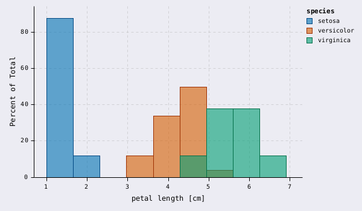
18.1.1 Bins
These options set the bins, what a bar’s height measures and the space the bins are made in. The first panels below use 30 bins of counts, explicit breaks measured as :density and two mirrored groups:
(plot/render-image (plot/arrange [{:data faithful
:mapping {:x :eruptions}
:charts [(chart/histogram {:bins 30 :y :count :stroke-color :none})]
:labels {:title ":bins 30 :y :count"}}
{:data faithful
:mapping {:x :eruptions}
:charts [(chart/histogram {:bins [1.5 2 2.5 3 3.5 4 4.5 5 5.5] :y :density
:color [120 160 90] :stroke-color :white})]
:labels {:title "breaks, :y :density"}}
{:data two-species
:mapping {:x :sepal-length :color :species}
:charts [(chart/histogram {:position :mirror :bins 12 :zero-line-color :red
:zero-line-width 2})]
:labels {:title ":position :mirror"}
:legend false}]
{:columns 3})
{:width 1000 :height 320})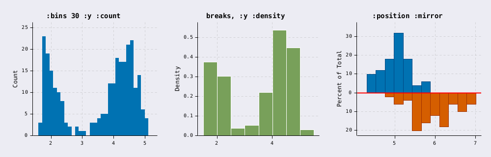
The next panels measure the same bins as shares summing to 1 (:pmf, the default :percent divided by 100) and as a running count (:cumulative):
(plot/render-image (plot/arrange [{:data faithful
:mapping {:x :eruptions}
:charts [(chart/histogram {:bins 20 :y :pmf})]
:labels {:title ":y :pmf"}}
{:data faithful
:mapping {:x :eruptions}
:charts [(chart/histogram {:bins 20 :y :cumulative})]
:labels {:title ":y :cumulative"}}]
{:columns 2})
{:width 900 :height 300})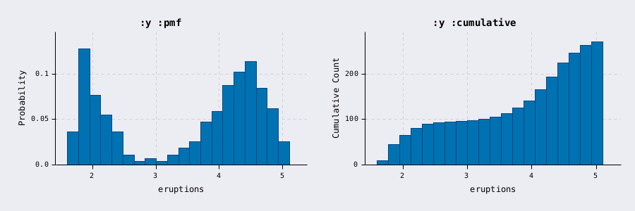
On a log axis, bins of equal width in data units crowd into the last decades. :stat-space :scale makes the bins in the axis’s log10 coordinates instead, so they are equally wide on screen. In either space the values must be numbers: the chart takes no dates.
(plot/render-image (plot/arrange [{:data skewed
:mapping {:x :value}
:scales {:x {:kind :log}}
:charts [(chart/histogram {:bins 20 :y :count :stat-space :data})]
:labels {:title ":stat-space :data"}}
{:data skewed
:mapping {:x :value}
:scales {:x {:kind :log}}
:charts [(chart/histogram {:bins 20 :y :count :stat-space :scale})]
:labels {:title ":stat-space :scale"}}]
{:columns 2})
{:width 900 :height 300})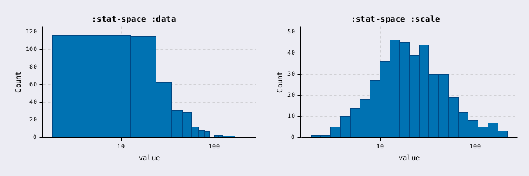
Facet panels share the bins, so they compare bar by bar. Under a free or sliced facet x scale, the chart bins the panels sharing an x scale over their own range instead (each panel of a wrap layout, a column or row of a grid): a bin count (here 8) or a rule applies per panel, while explicit breaks stay shared. Margin histograms follow their panel’s scale the same way.
(plot/render-image {:data iris
:mapping {:x :petal-length :facet :species}
:facets {:scales {:x :free}}
:charts [(chart/histogram {:bins 8 :y :count})]
:labels {:x "petal length [cm]"}}
{:width 900 :height 300})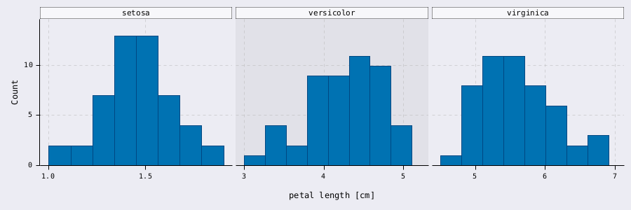
18.1.2 Invalid values
These options draw the rows whose x is missing or not a number, which the chart drops by default, in a band beside the x axis. With :invalid :show, shares (:percent, :pmf) count all rows, the invalid ones included. Groups stack or dodge in the band as in the bins, and every facet panel has its own band. A margin chart or a :custom-grid plot has no band, so :invalid :show there is an error. The panels below show every fifth value missing, then stack two groups in a flipped plot with their own label:
(def gappy (mapv (fn [i {:keys [value]}] {:value (when-not (zero? (mod i 5)) value) :group (if (even? i) "a" "b")})
(range) skewed))| value | group |
|---|---|
| a | |
| 5.432377544402306 | b |
| 14.669090820378228 | a |
| 40.82584739222101 | b |
| 13.078354465398991 | a |
| b | |
| 13.037364020437549 | a |
| 19.17019582641185 | b |
| 14.824310847812232 | a |
| 10.690099015595523 | b |
| a | |
| 9.116331220344927 | b |
| 37.37365506923162 | a |
| 27.21872176296663 | b |
| 19.75950164215408 | a |
| b | |
| 43.681297034474724 | a |
| 16.52126012111423 | b |
| 27.24652538177213 | a |
| 6.4971111669608455 | b |
| a | |
| 9.365691651907682 | b |
| 6.188200963581874 | a |
| 16.794077648589806 | b |
| 25.789767430154466 | a |
| b | |
| 85.36707392832939 | a |
| 48.84903146693207 | b |
| 51.55975501397397 | a |
| 25.704128454393658 | b |
| a | |
| 28.26387556508628 | b |
| 22.808671145321608 | a |
| 164.8899896412492 | b |
| 8.933440707802696 | a |
| b | |
| 8.563517526210143 | a |
| 38.80970744392038 | b |
| 179.32381325305346 | a |
| 6.217944013232817 | b |
| a | |
| 16.783626566789373 | b |
| 6.715239831870871 | a |
| 11.072318196362922 | b |
| 65.70609084809114 | a |
| b | |
| 149.62207161829264 | a |
| 17.373753114171812 | b |
| 35.29825370703353 | a |
| 15.446465117661427 | b |
| a | |
| 27.428097151688846 | b |
| 7.216136515948157 | a |
| 20.57565015914731 | b |
| 25.518123500974436 | a |
| b | |
| 4.228718478717844 | a |
| 26.31527384871188 | b |
| 84.31669956408959 | a |
| 48.99138258302952 | b |
| a | |
| 31.327608920151476 | b |
| 4.077815388301838 | a |
| 160.37141507976867 | b |
| 56.31767112909131 | a |
| b | |
| 42.110789296459096 | a |
| 4.128142803815318 | b |
| 26.91053755932542 | a |
| 84.52901899102923 | b |
| a | |
| 92.49406406232194 | b |
| 31.514898759565355 | a |
| 5.461635954077979 | b |
| 12.832204409857043 | a |
| b | |
| 12.89047062750862 | a |
| 31.88639252472308 | b |
| 18.914979500602723 | a |
| 50.774172175453174 | b |
| a | |
| 9.818920929752553 | b |
| 33.32035183391212 | a |
| 36.987383832918766 | b |
| 5.699193114963241 | a |
| b | |
| 11.266728129740004 | a |
| 14.659160419530002 | b |
| 54.65931643728897 | a |
| 12.296033715416334 | b |
| a | |
| 33.76854746628196 | b |
| 5.9756042226117865 | a |
| 50.58182962125001 | b |
| 72.20097526648814 | a |
| b | |
| 37.80002676289402 | a |
| 54.01200626555873 | b |
| 71.1527041325656 | a |
| 9.751836705852464 | b |
| … | … |
(plot/render-image (plot/arrange [{:data gappy
:mapping {:x :value}
:charts [(chart/histogram {:bins 20 :y :count :invalid :show})]
:labels {:title ":invalid :show"}}
{:data gappy
:mapping {:x :value :color :group}
:flip true
:charts [(chart/histogram {:bins 12 :position :stack :invalid :show :invalid-label "missing"})]
:labels {:title "flipped, stacked groups, :invalid-label"}}]
{:columns 2})
{:width 900 :height 300})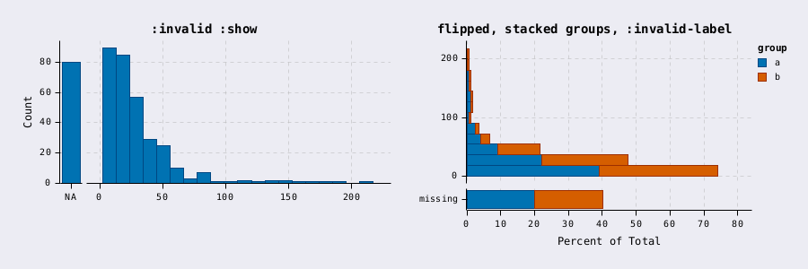
18.1.3 Position
These options set how groups share the bins, the 0 line and y range of mirrored groups, and the padding. The first panels below overlay the species translucently, dodge them, stack them and stack them to 1 - the share of each species in every bin:
(plot/render-image (plot/arrange [{:data iris
:mapping {:x :petal-length :color :species}
:charts [(chart/histogram {:position :overlay :alpha 0.4 :bins 20})]
:labels {:title ":position :overlay :alpha 0.4"}
:legend false}
{:data iris
:mapping {:x :petal-length :color :species}
:charts [(chart/histogram {:position :dodge :bins 12})]
:labels {:title ":position :dodge"}
:legend false}
{:data iris
:mapping {:x :petal-length :color :species}
:charts [(chart/histogram {:position :stack :bins 20})]
:labels {:title ":position :stack"}
:legend false}
{:data iris
:mapping {:x :petal-length :color :species}
:charts [(chart/histogram {:position :normalize :bins 20})]
:labels {:title ":position :normalize"}
:legend false}]
{:columns 2})
{:width 900 :height 560})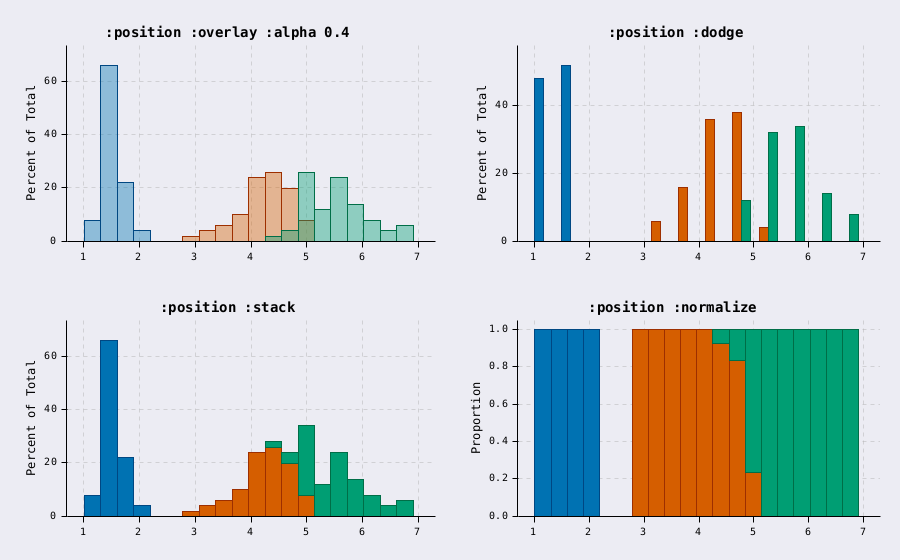
The next panels mirror two species on one y range [-M M] (:symmetric) and on their own ranges without the 0 line; the last one draws thick outlines and no padding above the bars:
(plot/render-image (plot/arrange [{:data two-species
:mapping {:x :sepal-length :color :species}
:charts [(chart/histogram {:position :mirror :bins 12 :symmetric true})]
:labels {:title ":symmetric true"}
:legend false}
{:data two-species
:mapping {:x :sepal-length :color :species}
:charts [(chart/histogram {:position :mirror :bins 12 :symmetric false :zero-line false})]
:labels {:title ":symmetric false :zero-line false"}
:legend false}
{:data faithful
:mapping {:x :eruptions}
:charts [(chart/histogram {:bins 15 :stroke-color :black :stroke-width 2
:padding {:y [0 0]}})]
:labels {:title ":stroke-width 2 :padding {:y [0 0]}"}}]
{:columns 3})
{:width 1000 :height 320})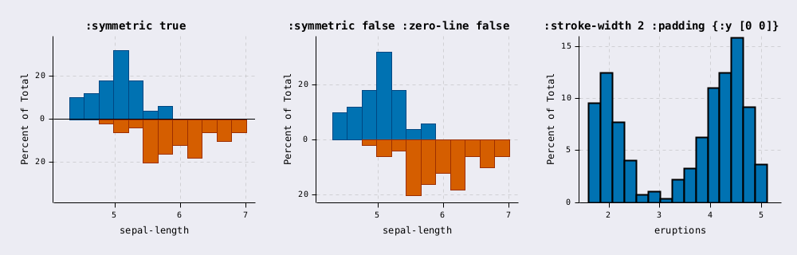
18.1.4 Style
These options set the bar fill, outline and opacity, and the 0 line of mirrored groups. The panels below set a fill without outlines, then translucent groups with wider outlines:
(plot/render-image (plot/arrange [{:data faithful
:mapping {:x :eruptions}
:charts [(chart/histogram {:bins 20 :color [200 120 60] :stroke-color :none})]
:labels {:title ":color, :stroke-color :none"}}
{:data two-species
:mapping {:x :sepal-length :color :species}
:charts [(chart/histogram {:bins 12 :alpha 0.3 :stroke-color :darker :stroke-width 1.5})]
:labels {:title ":alpha 0.3 :stroke-width 1.5"}
:legend false}]
{:columns 2})
{:width 900 :height 300})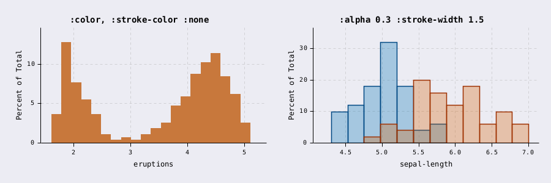
18.2 Density curves
chart/density estimates the density of the x values with a kernel and draws it as a curve, optionally filled. Use it for a smooth picture of a distribution that doesn’t hang on bin edges. Groups overlay, stack or mirror, and a categorical :y draws ridgelines.
:mapping:xrequired – The values whose density the chart estimates.:y– The ridgeline levels: the chart draws one curve per categorical level, or per level of a:bandsscale, and ignores a numeric:yon any other scale.:color– Splits the rows into groups, each curve in its own colour.:dash– Splits the rows into groups, each curve with its own dash style.:pattern– Splits the rows into groups, each area with its own fill pattern.:group– Splits the rows into groups that look the same, each its own curve.
(plot/render-image {:data iris
:mapping {:x :petal-length :color :species}
:charts [(chart/density)]
:labels {:x "petal length [cm]"}}
{:width 600 :height 350})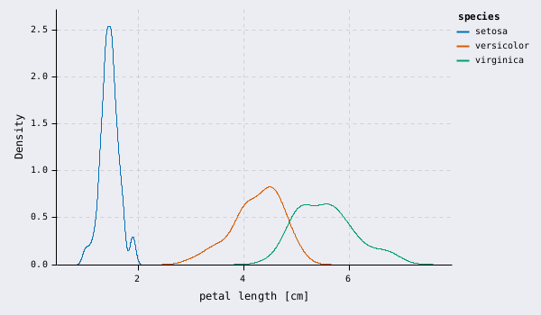
18.2.1 Style
These options fill the area under each curve, set its opacity, colour ridgelines with a gradient and style the 0 line of mirrored curves. The first panels below fill the species’ curves, colour ridgelines along x and draw a red 0 line:
(plot/render-image (plot/arrange [{:data iris
:mapping {:x :petal-length :color :species}
:charts [(chart/density {:fill :color :alpha 0.3})]
:labels {:title ":fill :color :alpha 0.3"}
:legend false}
{:data iris
:mapping {:x :sepal-length :y :species}
:charts [(chart/density {:fill-gradient :mpl/viridis})]
:scales {:y {:reverse true}}
:labels {:title "ridgelines, :fill-gradient"}}
{:data two-species
:mapping {:x :sepal-length :color :species}
:charts [(chart/density {:position :mirror :fill :color
:zero-line-color :red :zero-line-width 2})]
:labels {:title ":zero-line-color :red"}
:legend false}]
{:columns 3})
{:width 1000 :height 320})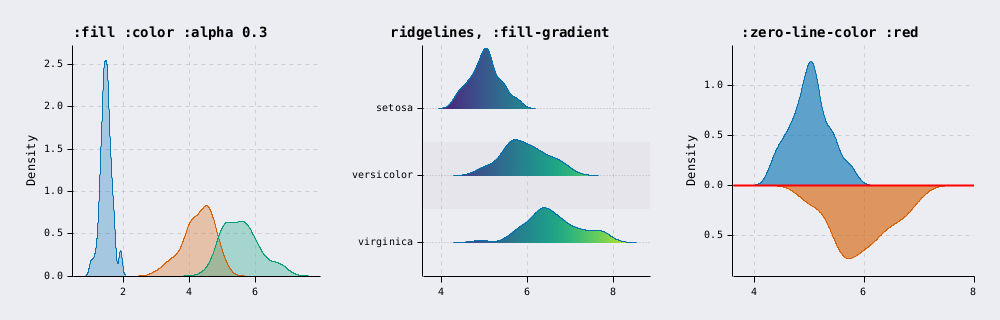
The next panels run the ridgelines’ gradient along x over the x domain, then along y from each ridge’s baseline up:
(plot/render-image (plot/arrange [{:data iris
:mapping {:x :sepal-length :y :species}
:charts [(chart/density {:fill-gradient :mpl/plasma :fill-gradient-axis :x})]
:scales {:y {:reverse true}}
:labels {:title ":fill-gradient-axis :x"}}
{:data iris
:mapping {:x :sepal-length :y :species}
:charts [(chart/density {:fill-gradient :mpl/plasma :fill-gradient-axis :y})]
:scales {:y {:reverse true}}
:labels {:title ":fill-gradient-axis :y"}}]
{:columns 2})
{:width 900 :height 320})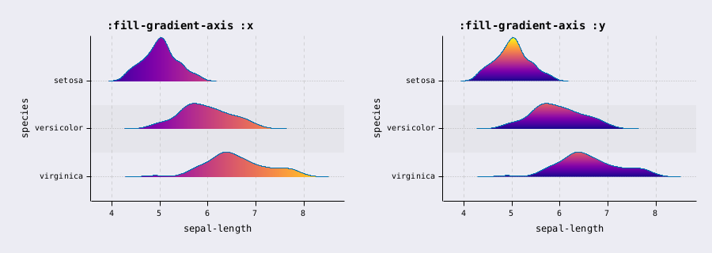
18.2.2 Estimate
These options set the estimate: the kernel, its bandwidth, the number of evaluation points, how far a curve reaches past the data and the space of the estimate. The first panels below compare the default with a narrow bandwidth and a uniform kernel cut at the data:
(plot/render-image (plot/arrange [{:data faithful
:mapping {:x :eruptions}
:charts [(chart/density)]
:labels {:title "default (:gaussian, :nrd0)"}}
{:data faithful
:mapping {:x :eruptions}
:charts [(chart/density {:bandwidth 0.1})]
:labels {:title ":bandwidth 0.1"}}
{:data faithful
:mapping {:x :eruptions}
:charts [(chart/density {:kernel :uniform :cut 0})]
:labels {:title ":kernel :uniform :cut 0"}}]
{:columns 3})
{:width 1000 :height 300})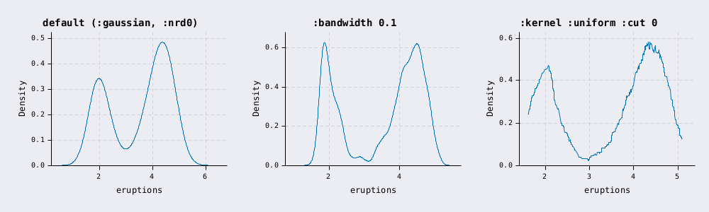
The next panels pick the bandwidth with a selector, evaluate the curve at only 8 points and stop it 1 bandwidth past the data (3 by default):
(plot/render-image (plot/arrange [{:data faithful
:mapping {:x :eruptions}
:charts [(chart/density {:bandwidth :sj})]
:labels {:title ":bandwidth :sj"}}
{:data faithful
:mapping {:x :eruptions}
:charts [(chart/density {:n 8})]
:labels {:title ":n 8"}}
{:data faithful
:mapping {:x :eruptions}
:charts [(chart/density {:cut 1})]
:labels {:title ":cut 1"}}]
{:columns 3})
{:width 1000 :height 300})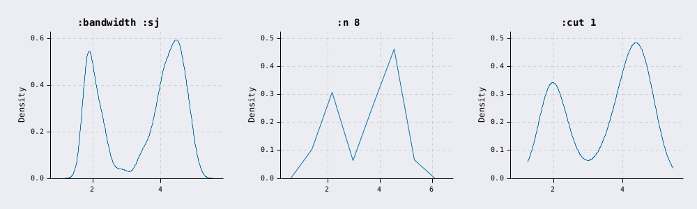
For skewed values, the curve estimated in data units (the default) is lopsided and its tail passes 0, which a log axis can’t show. :stat-space :scale estimates the density of the log10 values on a log axis and draws it back on the axis:
(plot/render-image (plot/arrange [{:data skewed
:mapping {:x :value}
:charts [(chart/density {:stat-space :data :fill :color})]
:labels {:title ":stat-space :data"}}
{:data skewed
:mapping {:x :value}
:scales {:x {:kind :log}}
:charts [(chart/density {:stat-space :scale :fill :color})]
:labels {:title ":stat-space :scale, a log x axis"}}]
{:columns 2})
{:width 900 :height 300})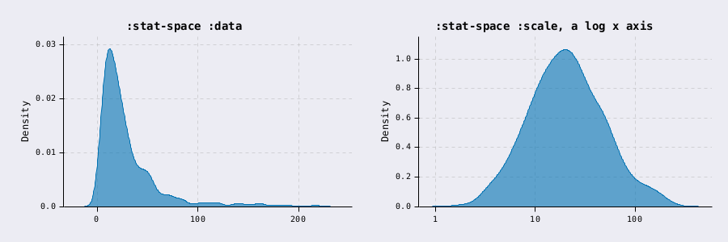
18.2.3 Position
These options set how groups combine, the 0 line and y range of mirrored halves, and the padding. The first panels below stack the species, mirror two of them and tie the mirrored halves to one range:
(plot/render-image (plot/arrange [{:data iris
:mapping {:x :petal-length :color :species}
:charts [(chart/density {:position :stack})]
:labels {:title ":position :stack"}
:legend false}
{:data two-species
:mapping {:x :petal-length :color :species}
:charts [(chart/density {:position :mirror :fill :color})]
:labels {:title ":position :mirror"}
:legend false}
{:data two-species
:mapping {:x :petal-length :color :species}
:charts [(chart/density {:position :mirror :fill :color :symmetric true})]
:labels {:title ":symmetric true"}}]
{:columns 3 :widths [1 1 1.4]})
{:width 1000 :height 320})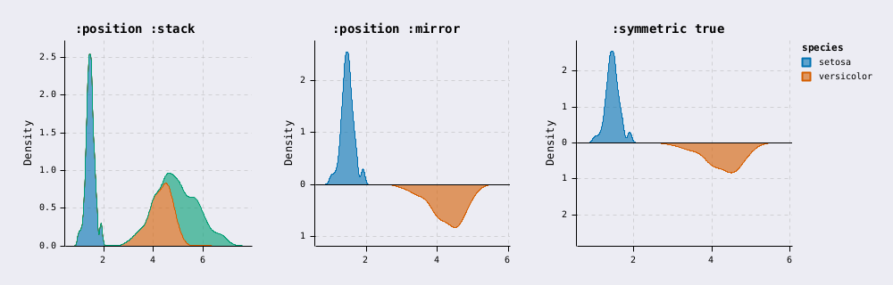
The next panels stack the curves to 1 (each species’ share of the density at every x), draw the two streamgraphs and mirror a pair without the 0 line or padding:
(plot/render-image (plot/arrange [{:data iris
:mapping {:x :petal-length :color :species}
:charts [(chart/density {:position :normalize})]
:labels {:title ":position :normalize"}
:legend false}
{:data iris
:mapping {:x :petal-length :color :species}
:charts [(chart/density {:position :silhouette})]
:labels {:title ":position :silhouette"}
:legend false}
{:data iris
:mapping {:x :petal-length :color :species}
:charts [(chart/density {:position :wiggle})]
:labels {:title ":position :wiggle"}
:legend false}
{:data two-species
:mapping {:x :petal-length :color :species}
:charts [(chart/density {:position :mirror :fill :color :zero-line false
:padding {:x [0 0] :y [0 0]}})]
:labels {:title ":zero-line false, no padding"}
:legend false}]
{:columns 2})
{:width 900 :height 560})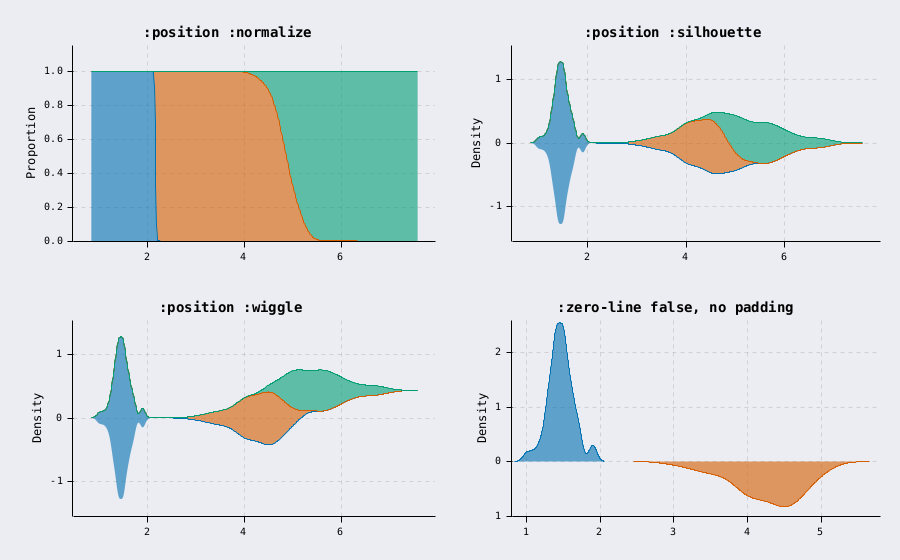
18.3 Empirical CDFs
chart/ecdf draws a step line per group: the share of values at or below each x. Use it to read medians and percentiles off a distribution, or to compare groups without choosing bins or a bandwidth.
:mapping:xrequired – The values whose empirical distribution the chart draws.:color– Splits the rows into groups, each step line in its own colour.:dash– Splits the rows into groups, each step line with its own dash style.:group– Splits the rows into groups that look the same, each its own step line.
(plot/render-image {:data iris
:mapping {:x :petal-length :color :species}
:charts [(chart/ecdf)]
:labels {:x "petal length [cm]" :y "share at or below"}}
{:width 600 :height 350})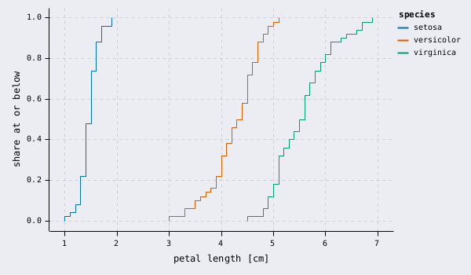
This option sets the padding. The example below has none on y, so the steps start and end at the panel’s edges:
(plot/render-image {:data faithful
:mapping {:x :eruptions}
:charts [(chart/ecdf {:padding {:y [0 0]}})]
:labels {:title ":padding {:y [0 0]}"}}
{:width 500 :height 300})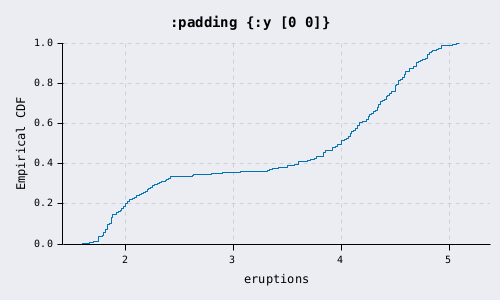
18.4 Q-Q plots
chart/qq draws the quantiles of one side against the other’s: two data columns, or data against a theoretical distribution. Use it to check whether a sample follows a distribution: points on the reference line mean the same shape.
:mapping:x– The data of the x side, unless:x-distributionis given.:y– The data of the y side, unless:y-distributionis given.:color– Splits the rows into groups, each with its own point and line colour.:shape– Splits the rows into groups, each with its own point shape.:size– Splits the rows into groups, each with its own point size.:group– Splits the rows into groups that look the same, each with its own reference line.
(plot/render-image {:data samples
:mapping {:y :v :color :sample}
:charts [(chart/qq {:x-distribution [:normal]})]
:labels {:x "normal quantiles" :y "sample quantiles"}}
{:width 600 :height 400})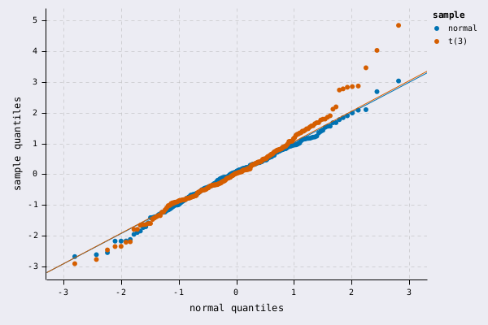
18.4.1 Style
These options style the points and set the reference line’s width. The example below draws translucent outlined squares and a thick line:
(plot/render-image {:data (filter #(= "t(3)" (:sample %)) samples)
:mapping {:y :v}
:charts [(chart/qq {:x-distribution [:normal] :size 9 :shape \S :color [200 80 40] :alpha 0.47
:stroke-color :black :stroke-width 0.5 :line-width 3})]
:labels {:title "squares, :line-width 3"}}
{:width 500 :height 350})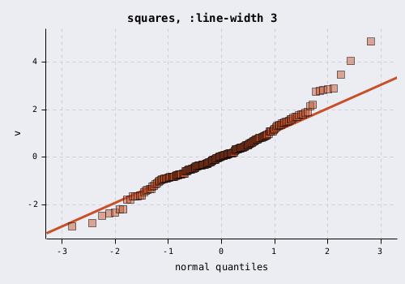
18.4.2 Distributions
These options turn either side into a distribution and set the reference line and the padding; with two distributions they also set the number of points and the label. The left panel below draws two pairs of distributions, the right one a sample against a uniform distribution without the line or padding:
(plot/render-image (plot/arrange [{:charts [(chart/qq {:x-distribution [:normal] :y-distribution [:t {:degrees-of-freedom 3}]
:label "t(3)" :mapping {:color :label}})
(chart/qq {:x-distribution [:normal] :y-distribution [:t {:degrees-of-freedom 30}]
:label "t(30)" :mapping {:color :label} :line false :n 30})]
:labels {:title "both sides distributions"}}
{:data faithful
:mapping {:y :eruptions}
:charts [(chart/qq {:x-distribution [:uniform-real {:lower 0 :upper 1}] :line false
:padding {:x [0 0] :y [0 0]}})]
:labels {:title "uniform, no line, no padding"}}]
{:columns 2 :widths [1.25 1]})
{:width 1000 :height 380})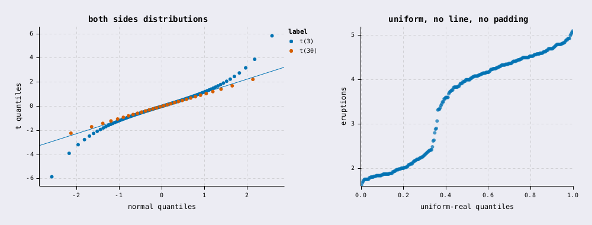
18.5 P-P plots
chart/pp draws probabilities against probabilities: one side’s empirical or theoretical CDF against the other side’s at the same values. Use it to compare distributions near their centres, where a Q-Q plot crowds its points; points on y = x mean the same distribution.
:mapping:x– The data of the x side, unless:x-distributionis given.:y– The data of the y side, unless:y-distributionis given.:color– Splits the rows into groups, each with its own point and line colour.:shape– Splits the rows into groups, each with its own point shape.:size– Splits the rows into groups, each with its own point size.:group– Splits the rows into groups that look the same, each with its own reference line.
(plot/render-image {:data samples
:mapping {:y :v :color :sample}
:charts [(chart/pp {:x-distribution [:normal] :size 4})]
:labels {:x "normal probabilities" :y "sample probabilities"}}
{:width 600 :height 400})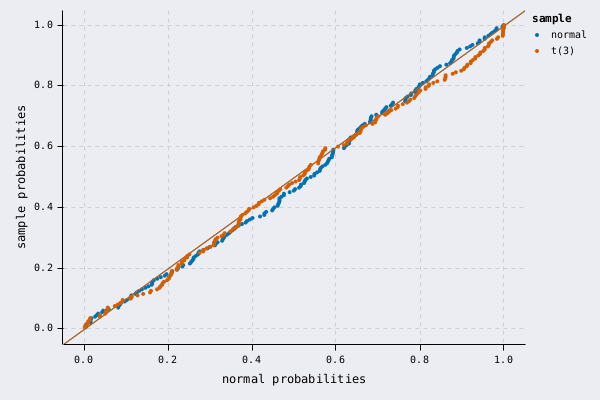
18.5.1 Style
These options style the points and set the reference line’s width. The example below draws translucent outlined circles and a thick line:
(plot/render-image {:data (filter #(= "t(3)" (:sample %)) samples)
:mapping {:y :v}
:charts [(chart/pp {:x-distribution [:normal] :size 8 :shape \O :color [200 80 40] :alpha 0.55
:stroke-color :black :stroke-width 1 :line-width 3})]
:labels {:title "outlined points, :line-width 3"}}
{:width 500 :height 350})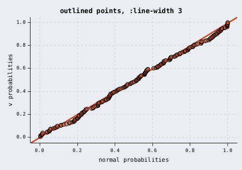
18.5.2 Distributions
These options turn either side into a distribution and set the reference line and the padding; with two distributions they also set the number of points, the domain and the label. The left panel below compares two pairs of distributions over [-5 5], the right one a sample against a fitted normal without the line and with wide padding:
(plot/render-image (plot/arrange [{:charts [(chart/pp {:x-distribution [:normal] :y-distribution [:t {:degrees-of-freedom 2}]
:domain [-5 5] :n 40 :label "t(2)" :mapping {:color :label}})
(chart/pp {:x-distribution [:normal] :y-distribution [:logistic]
:domain [-5 5] :n 40 :label "logistic" :mapping {:color :label}})]
:labels {:title "both sides distributions, :domain [-5 5]" :y "probabilities"}}
{:data faithful
:mapping {:y :waiting}
:charts [(chart/pp {:x-distribution [:normal {:mu 71 :sd 13.6}] :line false :size 3
:padding {:x [0.2 0.2] :y [0.2 0.2]}})]
:labels {:title "normal(71, 13.6), no line, padding 0.2"}}]
{:columns 2 :widths [1.25 1]})
{:width 1000 :height 380})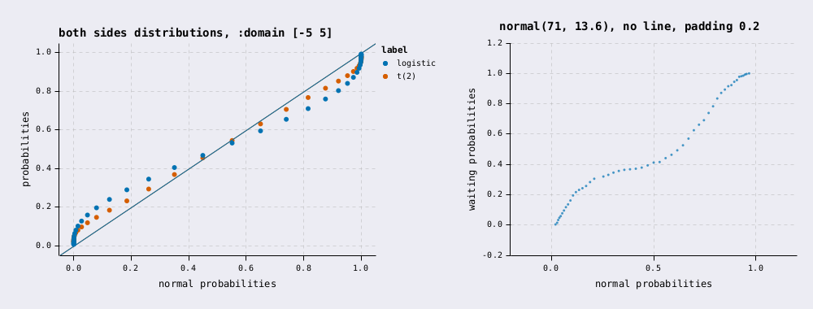
source: notebooks/reference/charts_one_variable.clj